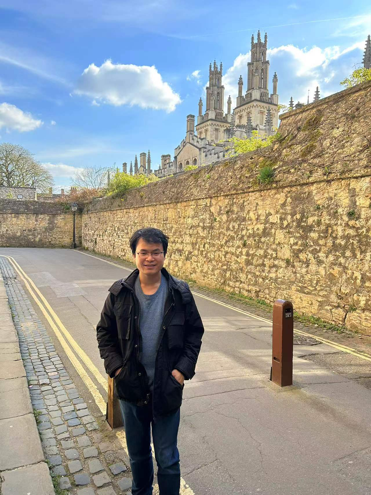

Associate Professor, Key Laboratory of Mathematics Mechanization, Chinese Academy of Sciences. (Prior to this, I was a research associate at the School of Mathematics, University of Bristol working with Ashley Montanaro and Noah Linden. I received my PhD from the University of Chinese Academy of Sciences under the supervision of Prof. Hongbo Li.)
Research interests: quantum computation, quantum algorithms, quantum complexity theory and some relevant mathematics
My research aims to better understand the power of quantum computers. I am especially interested in quantum algorithms, quantum query, communication and circuit complexity. I am also interested in symbolic computation, where I use tools from Clifford algebra, computational algebraic geometry, and invariant theory to automated reasoning. Some other interesting research topics include the Kaczmarz method, and randomised numerical linear algebra.
"If you can't do great things, do small things in a great way. Don't wait for great opportunities. Seize common, everyday ones and make them great." --- Napoleon Hill
Google Scholar, arXiv, Some talks, A full list of publications, the following is a list of preprints
Randomized Quantum Singular Value Transformation
with Xinzhao Wang, Yuxin Zhang,
Soumyabrata Hazra, Tongyang Li,
Shantanav Chakraborty
arXiv:2510.06851
Exponential Lindbladian fast forwarding and exponential amplification of
certain Gibbs state properties
with Zhong-Xia Shang and
Dong An
arXiv:2509.09517
Quantum singular value transformation without block encodings: Near-optimal complexity with minimal ancilla
with Shantanav Chakraborty,
Soumyabrata Hazra, Tongyang Li,
Xinzhao Wang, Yuxin Zhang
arXiv:2504.02385
Low-degree approximation of QAC0 circuits
with Ashley Montanaro,
Dominic Verdon
arXiv:2411.00976 (withdrawn)
There is a bug in the paper that will take some time to fix.
Quantum spectral method for gradient and Hessian estimation
with Yuxin Zhang
arXiv:2407.03833
Quantum speedup of leverage score sampling and its application
arXiv:2301.06107
Quantum algorithms for spectral sums
with Alessandro Luongo
arXiv:2011.06475